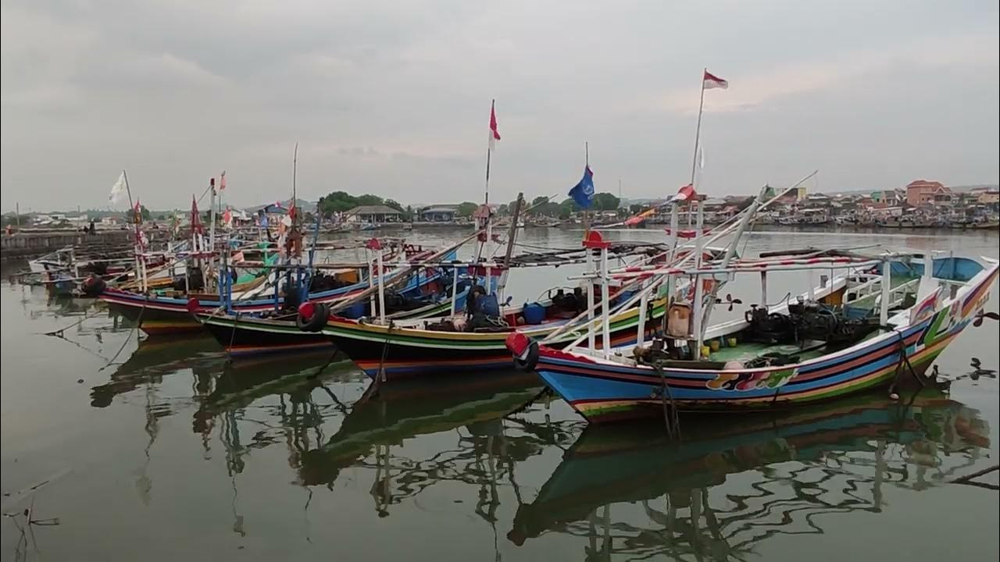
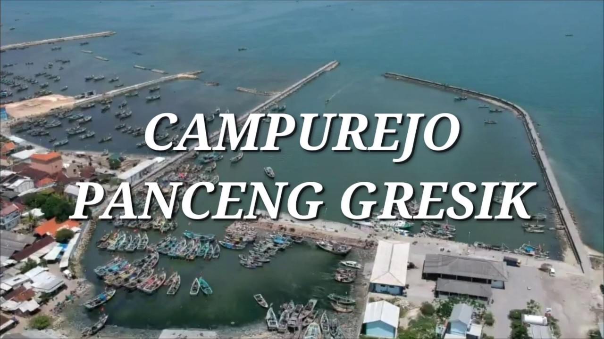
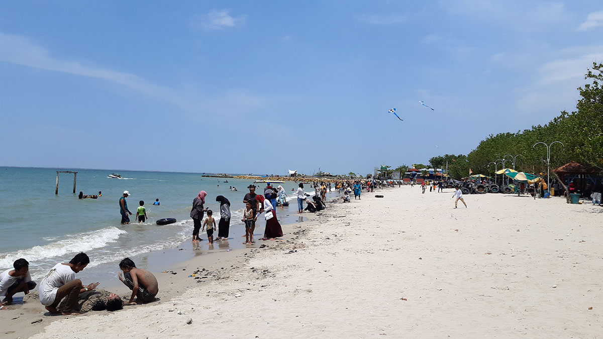
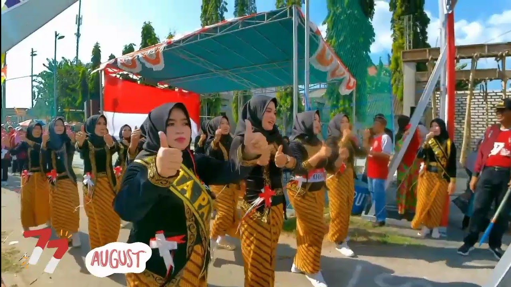

Tentang Kami
Sejarah Desa Campurejo Dahulu desa Campurejo Bernama desa Nyamploeng (kecemplong) yang mempunyai arti mudah tertarik, kemudian diganti dengan nama CAMPUREJO ( berasal dari kata campur dan rejo )yang mempunyai arti Campur : Bergabung dan Rejo : Jaya, jadi CAMPUREJO mempunyai arti yang bergabung akan merasakan kejayaan. Beriring dengan perkembangan zaman Masyarakat Desa Campurejo Babat Alas dalam proses pemekaran Wilayah, akhirnya saat ini desa campurejo mempunyai Tiga pedukuhan, yakni : Dusun Sidororejo Dusun Rejodadi Dusun Karangtumpuk.
Desa Campurejo memiliki sekitar 12.341 jiwa dengan 1.605 kepala keluarga, dengan wilayah yang luas serta maata pencaharian utama mayoritas penduduknya adalah nelayan.
Selengkapnya →Transparansi Anggaran 2025
Kependudukan
Galeri
Kegiatan
Gotong Royong

Wisata
Alam Desa

Budaya
Tradisi Lokal
Infrastruktur
Pembangunan
Layanan
Alamat
Desa Campurejo, Kec. Panceng, Kab. Gresik, Jawa Timur
Telepon
+62 851-8988-1290
desacampurejo@gmail.com
Jam Pelayanan
Senin – Jumat, 08.00 – 15.00 WIB